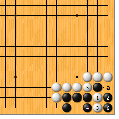
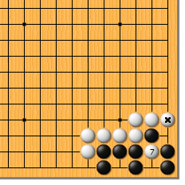
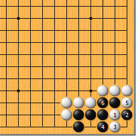
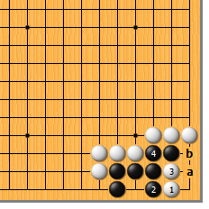
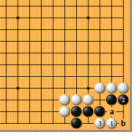
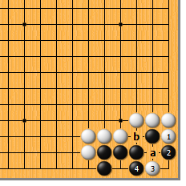
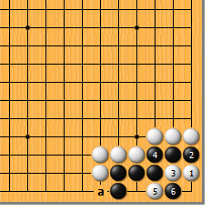

|  |  | |
| 图1 白1卡入是正解。黑2如于3位打，白2位立，黑死得太痛快了，故黑2从这边打。白3长，黑4挡时白5断，黑6提后…… | 图2 白7扑，黑成假眼，白*子的位置恰到好处。不过，在此形中，白极易犯错误……
| |
|  |  | |
图3 白1到黑4时，白5如随手在底下一断，顿时前功尽弃。黑6粘，白反而被倒扑。 | 图4 白1点，感觉虽爽，实属败着。黑2挡，白3时，黑4如于a位打吃，白4位断，黑就死了。然而人家可以于4位粘，白不行。白3如于b位拐，黑a挡，白3断时，黑4粘，白仍不行。
| |
|  |  | |
图5 白1点时，黑2不能挡，否则白3长，黑眼位尽失。黑a、白b，也不过是盘角曲四。 | 图6 白1拐，也是俗手。黑2挡住，白3点时，黑如于a位粘当然不行。然而黑4可挡，白a断时，黑b位粘。
| |
|  | 您的高见 | |
图7 也有人下白1的点吧。黑2遮断，白3、5紧紧地贴住，都是俗手。黑6一扑，一切玩完儿。只有a位有子时，上述手段才成立。（废话？） |